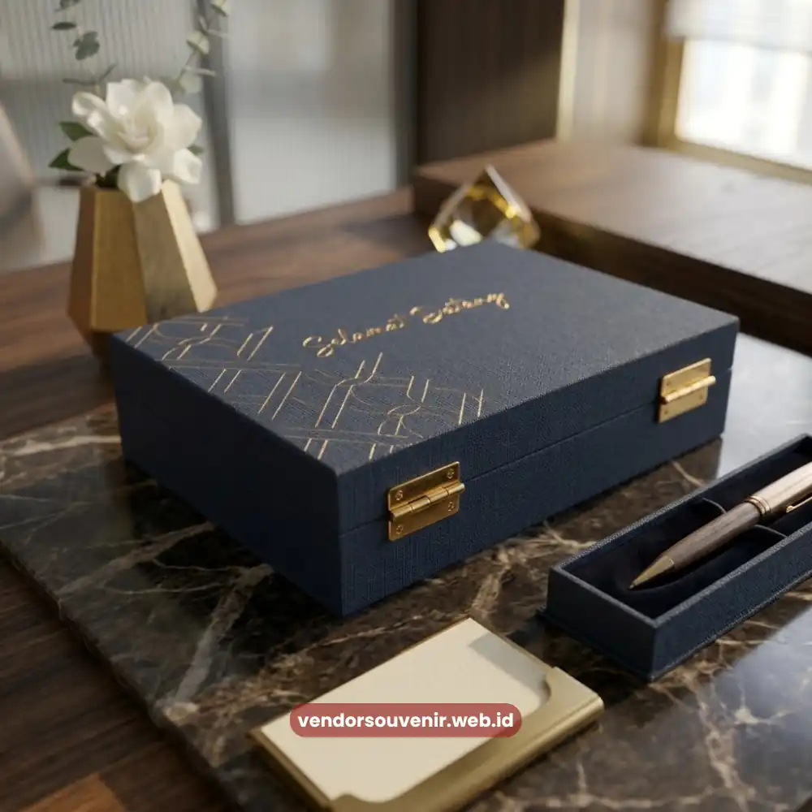

Daftar Isi
Harga welcome pack kantor secara umum ditentukan oleh kombinasi jenis barang, jumlah item per paket, tingkat kustomisasi logo, serta kuantitas pesanan yang diajukan perusahaan.
Semakin banyak jenis barang dan semakin kompleks proses kustomisasinya, semakin bervariasi pula kisaran harga yang perlu dianggarkan oleh tim HR atau bagian pengadaan.
Memahami faktor-faktor ini membantu perusahaan menyusun anggaran welcome pack secara lebih realistis sejak tahap perencanaan.
Bagi banyak perusahaan, terutama yang baru pertama kali menyusun program onboarding formal, pertanyaan mengenai anggaran sering kali menjadi hambatan utama.
Hal ini dapat menjadi kendala sebelum perusahaan memutuskan untuk memberikan welcome pack kepada karyawan baru mereka.
Padahal, dengan pemahaman yang tepat mengenai komponen harga, perusahaan dapat menyusun paket yang tetap berkesan tanpa membebani anggaran operasional secara berlebihan.
- Harga welcome pack kantor dipengaruhi jenis barang, jumlah item, dan tingkat kustomisasi.
- Kuantitas pesanan berperan besar dalam menentukan harga satuan per paket.
- Teknik cetak logo turut memengaruhi biaya produksi secara keseluruhan.
- Perencanaan anggaran sejak awal membantu perusahaan menghindari pembengkakan biaya.
- Vendor Souvenir menyediakan opsi paket sesuai berbagai rentang anggaran perusahaan.
Apa Saja Faktor Utama yang Memengaruhi Harga Welcome Pack Kantor?
Faktor utama yang memengaruhi harga welcome pack kantor mencakup jenis dan kualitas material barang, serta jumlah item yang disertakan dalam satu paket.
Selain itu, kompleksitas desain kustomisasi logo serta volume pesanan secara keseluruhan juga memainkan peran penting.
Barang dengan material premium seperti kulit sintetis berkualitas tinggi atau stainless steel tentu memiliki biaya produksi lebih tinggi dibandingkan barang berbahan standar.
Jumlah item per paket juga berbanding lurus dengan total anggaran yang dibutuhkan.
Paket dengan tiga hingga lima jenis barang tentu membutuhkan alokasi biaya yang berbeda dibandingkan paket sederhana dengan satu atau dua barang saja.
Perusahaan perlu menyeimbangkan antara jumlah item dan dampak yang ingin dicapai terhadap kesan karyawan baru.
Volume pesanan menjadi faktor signifikan lainnya dalam memengaruhi harga akhir.
Secara umum harga satuan per paket cenderung lebih efisien ketika jumlah pesanan meningkat, mengingat efisiensi proses produksi dan pengadaan bahan baku skala besar.
Bagaimana Teknik Kustomisasi Logo Memengaruhi Biaya Produksi?
Teknik kustomisasi logo memengaruhi biaya produksi karena setiap metode cetak memiliki tingkat kerumitan dan biaya bahan yang berbeda-beda.
Teknik sablon misalnya, umumnya memiliki biaya yang relatif efisien untuk barang berbahan kain dalam jumlah besar.
Sementara teknik laser engraving pada barang logam atau embossing pada bahan kulit cenderung membutuhkan biaya tambahan karena proses produksinya lebih detail.
Selain jenis teknik, jumlah warna pada desain logo turut memengaruhi biaya produksi.
Terutama untuk teknik cetak yang menghitung biaya berdasarkan jumlah warna yang digunakan.
Semakin sederhana desain logo dengan warna yang lebih sedikit, biasanya semakin efisien pula proses produksinya tanpa mengurangi kualitas.
Perusahaan yang ingin mengoptimalkan anggaran dapat mempertimbangkan penyederhanaan desain logo pada barang tertentu.
Hal ini dapat dilakukan tanpa harus mengorbankan keterbacaan dan konsistensi identitas merek secara keseluruhan.

Estimasi Harga Welcome Pack Kantor Per Paket
Bagaimana Cara Menyusun Anggaran Welcome Pack Kantor secara Realistis?
Menyusun anggaran welcome pack kantor secara realistis dapat dimulai dengan menentukan terlebih dahulu tujuan utama pemberian paket tersebut.
Apakah lebih menekankan pada fungsi praktis, nilai branding, atau kombinasi keduanya.
Penentuan tujuan ini akan memudahkan tim HR dalam memilih prioritas jenis barang yang perlu dimasukkan ke dalam paket.
Langkah berikutnya adalah menentukan jumlah karyawan baru yang akan menerima welcome pack dalam periode tertentu.
Misalnya per bulan atau per kuartal, sehingga anggaran dapat direncanakan secara berkala dan tidak bersifat dadakan.
Perencanaan berkala ini juga memudahkan proses negosiasi harga dengan penyedia souvenir korporat karena volume pesanan menjadi terprediksi.
Selain itu, penting untuk menyisakan ruang fleksibilitas anggaran guna mengakomodasi kebutuhan khusus yang mungkin muncul.
Seperti permintaan tambahan dari divisi tertentu atau penyesuaian desain di tengah periode produksi, agar proses tetap berjalan lancar.
Apakah Anggaran Terbatas Tetap Bisa Menghasilkan Welcome Pack Kantor yang Berkesan?
Anggaran terbatas tetap dapat menghasilkan welcome pack kantor yang berkesan selama perusahaan berfokus pada kualitas dan relevansi barang.
Fokusnya bukan semata-mata pada kuantitas item yang disertakan, melainkan nilai gunanya.
Satu atau dua barang fungsional dengan kualitas baik dan desain logo yang rapi sering kali memberikan dampak lebih besar.
Hal ini jauh lebih baik dibandingkan memberikan banyak barang dengan kualitas seadanya.
Pendekatan lain yang dapat diterapkan adalah menambahkan sentuhan personal berbiaya rendah, seperti kartu ucapan bertulisan tangan.
Secara emosional, ini tetap memberikan kesan mendalam tanpa menambah beban anggaran secara signifikan.
Kombinasi antara efisiensi biaya dan sentuhan personal inilah yang sering kali menjadi kunci keberhasilan welcome pack kantor.

Konsultasikan Anggaran Welcome Pack Anda Bersama Vendor Souvenir
Harga welcome pack kantor pada dasarnya sangat fleksibel dan dapat disesuaikan dengan kebutuhan serta kemampuan anggaran masing-masing perusahaan.
Fokus pada kualitas dan relevansi barang, bukan sekadar kuantitas, menjadi kunci utama menghasilkan welcome pack yang tetap berkesan meskipun dengan anggaran terbatas.
Pertanyaan yang Sering Diajukan (FAQ)
Apakah harga welcome pack kantor sama untuk semua jenis usaha?
Harga welcome pack kantor dapat bervariasi antar jenis usaha karena perbedaan kebutuhan barang, standar kualitas, dan tingkat kustomisasi yang diinginkan masing-masing perusahaan.
Apakah pemesanan dalam jumlah besar mempengaruhi harga satuan?
Pemesanan dalam jumlah besar secara umum dapat memengaruhi efisiensi harga satuan, karena proses produksi dalam skala besar cenderung lebih optimal dibandingkan produksi dalam jumlah kecil.
Apakah ada biaya tambahan untuk desain kustomisasi logo?
Biaya tambahan untuk desain kustomisasi logo dapat bervariasi tergantung tingkat kerumitan desain dan teknik cetak yang dipilih, sehingga sebaiknya dikonfirmasikan langsung pada tahap konsultasi pemesanan.
Maroon Souvenir
Partner Corporate Gift terpercaya di Indonesia. Berpengalaman melayani ratusan perusahaan sejak 2018.
Lihat Portofolio Kami